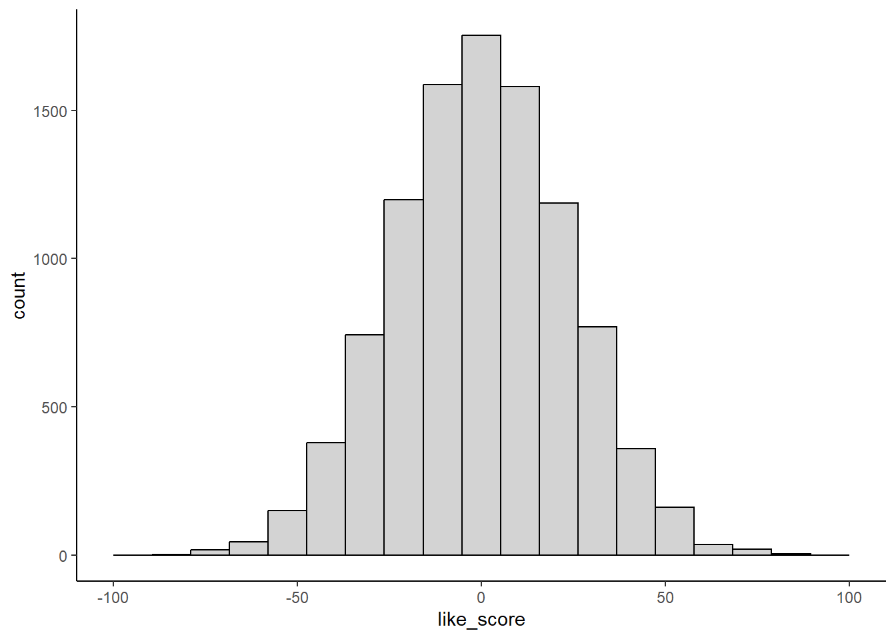

Show Answer
Administer the Ocean liking scale to all 10,000 inhabitants in the population
and calculate the population mean score. Is it 0? If not, the inhabitants are
not neutral on average.Inferential statistics are used to estimate parameters in the population from parameter estimates in a sample drawn from that population.
In inferential statistics, we use these parameter estimates to test hypotheses (predictions; null and alternative hypotheses) about the size of the population parameter.
These predictions about the size of population parameters typically map directly onto research questions about (causal) relationships between variables (IVs and DV).
Answers from inferential statistics are probabilistic. In other words, all answers have the potential to be wrong and you will provide an index of that probability along with your results.
A population is any clearly defined set of objects or events (people, occurrences, animals, etc.). Populations usually represent all events in a particular class (e.g., all college students, all alcoholics, all depressed people, all people). It is often an abstract concept because in many/most instances you will never have access to the entire population.
For example, many of our studies may have the population of all people as its target.
Nonetheless, researchers usually want to describe or draw conclusions about populations (e.g., We don’t care if some new drug is an effective treatment for 100 people in your sample. Will it work, on average, for everyone we might treat?).
A parameter is a value used to describe a certain characteristic of a population. It is usually unknown and therefore has to be estimated.
For example, the population mean is a parameter that is often used to indicate the average/typical value of a variable in the population.
Within a population, a parameter is a fixed value which does not vary within the population at the time of measurement (e.g., the mean height of people in the US at the present moment).
You typically can’t calculate these parameters directly because you don’t have access to the entire population.
We use Greek letters to represent population parameters (\(\mu\), \(\sigma\), \(\sigma^2\), \(\beta_0\), \(\beta_j\)).
A sample is a finite group of units (e.g., participants) selected from the population of interest.
A sample is generally selected for a study because the population is too large to study in its entirety. We typically have only one sample in a study.
We use the sample to estimate and test parameters in the population.
These estimates are called parameter estimates.
We use Roman letters to represent sample parameter estimates (\(\overline{X}\), \(s\), \(s^2\), \(b_0\), \(b_j\)).
Since a sample does not include all members of the population, parameter estimates generally differ from parameters on the entire population (e.g., use mean height of a sample of 1000 people to estimate mean height of US population).
The difference between the (sample) parameter estimate and the (population) parameter is sampling error.
You will not be able to calculate the sampling error of your parameter estimate directly because you don’t know the value of the population parameter. However, you can estimate it by probabilistic modeling of the hypothetical sampling distibution for that parameter.
A sampling distribution is a probability distribution for a parameter estimate drawn from all possible samples of size \(N\) taken from a population.
A sampling distribution can be formed for any population parameter.
Each time you draw a sample of size \(N\) from a population you can calculate an estimate of that population parameter from that sample.
Because of sampling error, these parameter estimates will not exactly equal the population parameter. They will not equal each other either. They will form a distribution.
A sampling distribution, like a population, is an abstract concept that represents the outcome of repeated (infinite) sampling. You will typically only have one sample.
Research question: How do inhabitants of a remote pacific island feel about the ocean? Population size = 10,000.
Dependent measure: Ocean liking scale scores that range from -100 (strongly dislike) to 100 (strongly like). 0 represents neutral.
Hypotheses: \(H_0\): \(\mu\) = 0; \(H_a\): \(\mu\) <> 0
library(tidyverse)
1path_data <- "data_lecture"
2data <- read_csv(here::here(path_data, "2_sampling_distributions_like.csv"),
show_col_types = FALSE) |>
3 glimpse()here() function in the here package (here::here()) to define paths within a function. This approach (vs. file.path) works well when using R Projects.
glimpse() is a useful function that you can pipe tibbles into when first reading them in. It shows you useful information, like number of rows and column, variable (column) names, a sample of what the data look like, and the class of each variable (e.g., double, character, factor).
Rows: 10,000
Columns: 3
$ subid <dbl> 1, 2, 3, 4, 5, 6, 7, 8, 9, 10, 11, 12, 13, 14, 15, 16, 17, 18,…
$ like_0 <dbl> -23.608554, -9.011961, 30.536791, 5.886441, -9.164940, 23.6671…
$ like_15 <dbl> -8.6085538, 5.9880386, 45.5367907, 20.8864415, 5.8350596, 38.6…See also:
skim functions in the skimr package are helpful for quick summaries of your data (e.g., missingness, distribution, type of data)
data |>
skimr::skim()| Name | data |
| Number of rows | 10000 |
| Number of columns | 3 |
| _______________________ | |
| Column type frequency: | |
| numeric | 3 |
| ________________________ | |
| Group variables | None |
Variable type: numeric
| skim_variable | n_missing | complete_rate | mean | sd | p0 | p25 | p50 | p75 | p100 | hist |
|---|---|---|---|---|---|---|---|---|---|---|
| subid | 0 | 1 | 5000.5 | 2886.90 | 1.00 | 2500.75 | 5000.5 | 7500.25 | 10000.00 | ▇▇▇▇▇ |
| like_0 | 0 | 1 | 0.0 | 23.67 | -86.64 | -16.08 | 0.1 | 16.14 | 84.46 | ▁▃▇▃▁ |
| like_15 | 0 | 1 | 15.0 | 23.67 | -71.64 | -1.08 | 15.1 | 31.14 | 99.46 | ▁▃▇▃▁ |
You can also pull out a few rows to look at your data. This can be done using slice_head to pull out \(n\) top rows of the data set, slice_tail to pull out \(n\) bottom rows of the data set, or slice_sample to pull out a random \(n\) of rows from the data set.
data |>
slice_head(n = 5) # A tibble: 5 × 3
subid like_0 like_15
<dbl> <dbl> <dbl>
1 1 -23.6 -8.61
2 2 -9.01 5.99
3 3 30.5 45.5
4 4 5.89 20.9
5 5 -9.16 5.84data |>
slice_tail(n = 5) # A tibble: 5 × 3
subid like_0 like_15
<dbl> <dbl> <dbl>
1 9996 -16.6 -1.63
2 9997 -8.37 6.63
3 9998 18.6 33.6
4 9999 -16.2 -1.19
5 10000 -17.0 -2.03data |>
slice_sample(n = 5)# A tibble: 5 × 3
subid like_0 like_15
<dbl> <dbl> <dbl>
1 6602 23.9 38.9
2 2771 -7.70 7.30
3 3877 1.62 16.6
4 8644 16.1 31.1
5 8498 38.8 53.8 data |>
ggplot(aes(x = like_0)) +
geom_histogram(color = "black", fill = "light grey", bins = 20) +
1 theme_classic()ggplot() code or set globally at the top of your script using the code below:
theme_set(theme_classic()) 